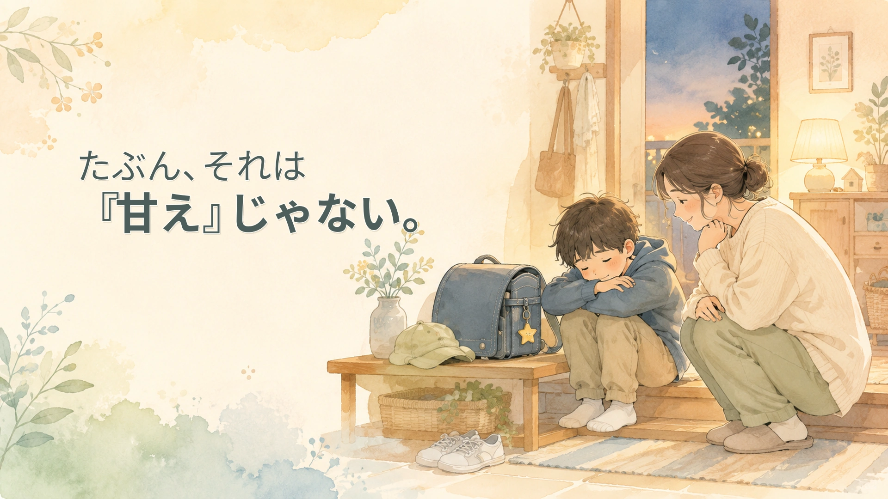

📖 知っておくと読みやすくなる言葉
- 特別支援教育コーディネーター
- → 校内の支援を調整する役割の教員。担任とは別に、相談の窓口になってくれる
- スクールカウンセラー
- → 学校に配置される心理の専門職。子ども・保護者のどちらも相談できる
- 放課後等デイサービス
- → 障害のある子が放課後や休日に通える福祉サービス
- 相談支援事業所
- → 福祉サービスの利用計画づくりや、どこに相談すべきかの整理を手伝う窓口
「学校では、特に問題ありません」——先生からそう言われる。でも、家に帰ると別人のようになる。
泣く。怒る。動けなくなる。宿題の前で固まる。きょうだいに強く当たる。夜は不安を訴え、朝は「行きたくない」と言う。学校では大丈夫と言われるのに、家では毎日つらそうにしている。そんなとき、保護者はとても苦しくなります。
「家での関わり方が悪いのだろうか」「甘やかしているからなのか」「学校で大丈夫なら、家庭の問題なのか」——そう考えて、自分を責めてしまう方もいます。
けれど、まずお伝えしたいことがあります。家で荒れる・泣く・動けなくなるからといって、家庭のしつけ不足とは限りません。学校で頑張りすぎた緊張が、安心できる家でほどけている場合があります。学校では見えにくい不安や疲れ、感覚のつらさ、友人関係の負荷、翌日への見通しにくさが、家庭でようやく表に出ている場合もあります。
この記事では、「学校では頑張っているのに、家でつらくなる子」をどう理解すればよいのか、保護者が一人で抱え込まないための見方を整理します。なお、この記事は診断や治療の判断をするものではなく、学校や関係機関と話し合うための材料として整理することを目的にしています。
この記事で考えたいこと
家で荒れる姿だけを見ると、「わがまま」「甘え」「反抗」に見えることがあります。でもその奥には、疲れ、不安、緊張、見通しの持ちにくさ、感覚のつらさ、失敗への不安が隠れていることがあります。
大切なのは、子どもを責めることでも、保護者を責めることでもなく、「何が起きているのか」を少し丁寧に見ていくことです。家庭で見えている姿は、支援を考えるための大切な情報になります。
「学校で大丈夫」は、「困っていない」と同じではない
学校で問題なく過ごしているように見える子がいます。授業中に座り、先生の話を聞き、友達とも大きなトラブルがなく、提出物も出し、行事にも参加している。外から見ると、「ちゃんとできている子」です。
でもそれは、必ずしも「困っていない」という意味ではありません。学校では、たくさんの力を使っています。周りに合わせる。音や人の多さを我慢する。分からなくても聞けずにいる。友達の言葉に傷ついても平気な顔をする。予定変更に戸惑いながら、何とかついていく。苦手な活動も、みんなと同じようにやろうとする。
子どもによっては、学校で一日を過ごすだけで、かなりのエネルギーを使っていることがあります。そして家に帰ったとき、ようやく力が抜ける。そのときに、泣いたり、怒ったり、動けなくなったりすることがあります。
家庭は「安心して緊張がほどける場所」かもしれない
家でだけ荒れる子を見ると、「外では頑張れるのに、なぜ家ではできないのか」と感じるのは自然です。でも見方を変えると、家庭はその子にとって、ようやく緊張を解ける場所なのかもしれません。学校では気を張り、友達の目を気にし、指示に合わせ、失敗しないように頑張っている。その緊張が、家に帰った途端にほどける。すると、抑えていた疲れや不安が、一気に出てくることがあります。
もちろん、家で暴れてよい、家族に何をしてもよい、という話ではありません。理解することは、我慢し続けることではありません。保護者やきょうだいが傷つく状態を、そのままにしてよいわけでもありません。
ただ、最初から「甘え」「わがまま」「しつけの問題」と決めつけると、本当の困り感が見えにくくなります。まずは、こう考えてみることが大切です。
- この子は、どこで力を使い切っているのだろう
- 家で何がほどけているのだろう
- 学校で見えていない負荷はないだろうか
- 家庭で出ている姿を、支援の手がかりにできないだろうか
保護者も、傷ついている
家で荒れる姿を毎日受け止めている保護者も、深く傷ついています。子どもを大切に思っているからこそ、怒ってしまったあとに自分を責める。助けたいのに、どうしたらよいか分からなくなる。
「また今日も怒ってしまった」「つらさを分かってあげたいのに、こちらも限界になる」「学校では大丈夫と言われるから、誰にも分かってもらえない」——そう感じることもあると思います。そのしんどさも、見落としてはいけないものです。子どもの困り感だけでなく、保護者の疲れも、家庭全体の状態も、支援を考えるうえで欠かせない情報です。
いつ、どんな流れでつらくなるのかを見る
家での困りごとを考えるとき、まず見たいのは「いつつらくなるのか」です。同じように見える荒れ方でも、タイミングによって背景が違うことがあります。
帰宅直後につらくなる場合
学校で一日頑張った疲れが、一気に出ている可能性があります。玄関に入った瞬間に不機嫌になる、ランドセルを置いたまま動けない、着替えるだけで怒る、保護者の一言に強く反応する——。この場合、帰宅後すぐに宿題や片づけを求めると、さらに苦しくなることがあります。まずは、静かに休む時間が必要かもしれません。
宿題の前につらくなる場合
勉強が嫌いというより、宿題に取りかかるまでの負荷が大きい場合があります。何から始めればよいか分からない。量が多く見えて圧倒される。書くことが苦手。間違えるのが怖い。学校で使い切った集中力が残っていない。「早くやりなさい」だけでは動きにくいことがあります。量を分ける、始める場所を決める、最初の一問だけ一緒に見る、書く量を学校に相談する——そうした調整が必要になることがあります。
夕方から夜につらくなる場合
一日の疲れがたまり、気持ちの調整が難しくなっている可能性があります。夕食前後に荒れる、お風呂や歯みがきで怒る、寝る前に不安を訴える、翌日の学校を考えて落ち込む——。生活リズムや見通しが関係していることもあります。「次に何をするか」が見えるだけで、少し落ち着く子もいます。
朝につらくなる場合
朝の不調は、単なる寝起きの悪さだけではないことがあります。学校での不安、前日の疲れ、苦手な授業や行事、友達関係、給食や体育・音楽・集会などへの負担。そうしたものが、朝の「行きたくない」として出ることがあります。朝の姿だけを見るのではなく、前日や学校での出来事とつなげて考えることが大切です。
行動そのものより、「前後の流れ」を見る
子どもが荒れると、どうしてもその行動だけが目に入ります。大声を出した、物を投げた、泣き続けた、動かなかった、きょうだいに当たった、宿題を破った——。もちろん、危険な行動には対応が必要です。ただ支援を考えるときは、その行動の前後も見たいところです。
- 何のあとに起きたのか／何を言われたあとだったのか
- どの時間帯だったのか
- 学校で何があった日か
- 空腹、眠気、疲れはなかったか
- 音やにおい、人混みなどの刺激は多くなかったか
- 予定変更はなかったか
- 苦手な宿題や活動が重なっていなかったか
行動は、突然起きているように見えても、背景があります。その背景が見えてくると、子どもを責める以外の手立てが見えてきます。
「家で困っています」だけでは、学校に伝わりにくい
保護者が学校に相談しても、うまく伝わらないことがあります。「家ではすごく荒れています」と伝えても、学校ではその姿が見えていないため、「学校では頑張っていますよ」「こちらでは特に問題ありません」「家で甘えているのかもしれませんね」という返答になることがあります。
先生が悪気なく言っている場合もあります。ただ保護者としては、そこでさらに孤立してしまいます。学校に伝えるときは、「家で困っています」だけでなく、少し具体的に整理すると伝わりやすくなります。
- いつつらくなるのか／どんな様子になるのか／どれくらい続くのか
- 何のあとに起きやすいのか
- その日、学校でどんな活動があったか
- 宿題の量や内容との関係はあるか
- 朝や夜の不安はあるか
- 家庭で試した対応は何か／学校に確認してほしいことは何か
こうして整理すると、学校側も「家庭の問題」ではなく、「学校生活のどこかに負荷があるかもしれない」と考えやすくなります。
学校に確認したいこと
家でつらくなる背景を考えるために、学校に確認できることがあります。
- 分からないとき、授業中に質問できているか
- 休み時間に安心して過ごせているか
- 友達関係で無理をしていないか
- 給食、体育、音楽、図工などで強い負担がないか
- 集会や行事のあとに疲れが出ていないか
- 予定変更に戸惑う場面はないか
- 音、人混み、においなどの刺激で疲れていないか
- 宿題の量や内容が本人に合っているか
- 「できている」ように見えて、実はかなり頑張っていないか
ここでも、「学校で何をしているのですか」と詰めるより、「家でこういう姿が出ています。学校で負荷がかかっていそうな場面はありますか」と一緒に探す姿勢の方が、話し合いになりやすいです。
家庭でできる小さな調整
家でのつらさを減らすために、家庭でできる工夫もあります。ただし、保護者が全部を背負う必要はありません。ここで紹介するのは、家庭だけで解決するためではなく、子どもの負荷を少し見えやすくするための工夫です。
帰宅後すぐに求めすぎない
帰宅直後は、学校で使った力が切れている時間かもしれません。そこへ「手を洗って」「宿題をして」「片づけて」「明日の準備をして」と続けると、一気につらくなる子がいます。まずは10分だけ休む。好きな飲み物を飲む。静かな場所で過ごす。話しかけすぎない。そうした時間が、切り替えの助けになることがあります。
宿題を小さく分ける
宿題が大きな山に見えると、取りかかる前から苦しくなる子がいます。「まず一問」「まず名前を書く」「音読だけ先に」「5分だけ」というように小さく分けると、始めやすくなることがあります。それでも毎日大きく崩れる場合は、家庭だけで頑張らず、宿題の量や出し方を学校に相談してよいと思います。
予定を見えるようにする
口で言われるだけでは見通しが持ちにくい子もいます。帰宅後の流れを紙に書く、ホワイトボードに「休む」「宿題」「ご飯」「お風呂」と並べる。それだけで少し安心する子もいます。ただし、予定表を作れば必ず守れる、というものではありません。子どもを管理する道具ではなく、見通しを持つための手がかりとして使う方がよいと思います。
「できたか」より「疲れていないか」を見る
保護者はどうしても「宿題ができたか」「準備ができたか」を見ます。それも必要です。でも家でつらくなる子の場合は、今日はどれくらい疲れているか、声や物音に敏感になっていないか、いつもより反応が強くないか、小さなことで泣きそうになっていないか——という疲れのサインも見たいところです。できない日には、できない理由があります。その理由を探すことが、支援の入口になります。
きょうだいを含めた家庭全体の安心も大切です
家で荒れる姿が続くと、きょうだいにも影響が出ることがあります。きょうだいが怖がっている、家の中でいつも緊張している、甘えたいのに遠慮している、「また始まった」と身構えている、自分の気持ちを後回しにしている——。
こうした場合、本人だけでなく、きょうだいを含めた家庭全体の安心を考える必要があります。「本人が大変だから、きょうだいには我慢してもらうしかない」——そうなり続けると、家庭全体が疲れていきます。本人の困り感を理解することと、きょうだいの安心を守ることは、どちらも大切です。保護者だけで調整しようとせず、学校や相談機関に「家庭全体が疲れている」と伝えてよいと思います。
相談してよい目安
「このくらいで相談していいのだろうか」と迷う保護者は少なくありません。ただ、次のようなサインがある場合は、家庭内の工夫だけで様子を見る段階を超えていることがあります。
- 週に何度も大きく荒れる
- 宿題や登校準備のたびに、親子で消耗している
- きょうだいが怖がっている
- 保護者が眠れない、涙が出る、限界を感じる
- 家庭全体が常に緊張している
- 腹痛、頭痛、食欲不振、不眠が続いている
- 登校の前後で強い身体症状が出る
このような場合は、家庭内の工夫だけで抱え込まないでください。学校、スクールカウンセラー、特別支援教育コーディネーター、相談支援事業所、放課後等デイサービス、医療機関、自治体の相談窓口など、必要に応じてつながってよい状態です。
本人が「消えたい」「死にたい」と言う、自傷や他害など差し迫った危険があるときは、ためらわず以下に連絡してください。
- かかりつけ医・主治医、スクールカウンセラー
- 24時間子供SOSダイヤル：0120-0-78310
- よりそいホットライン：0120-279-338（24時間・無料）
- 緊急時は 119番・110番
相談するときのメモ例
学校や相談機関に伝えるときは、長い説明よりも、短いメモが役立つことがあります。
家で見えている様子
- 帰宅後30分くらいで怒りやすくなる
- 宿題を始める前に泣く
- 音読の日に特に荒れる
- 翌日に体育や行事があると、寝る前の不安が強い
- 学校では大丈夫と言われるが、家では疲れ切っている
家庭で試したこと
- 帰宅後すぐに宿題をしないようにした
- 休憩時間を先に入れた
- 宿題を小分けにした
- 予定を書いて見えるようにした
- それでも週に数回、大きく崩れる
学校に相談したいこと
- 学校で疲れやすい場面はないか
- 宿題量や出し方を調整できるか
- 苦手な活動の前後に負荷がかかっていないか
- 本人が困ったときに相談できているか
- 家庭で見えている姿を、学校でも共有してもらえるか
このように整理すると、相談が「困っています」で終わらず、「一緒に背景を見てほしい」という話になりやすくなります。
最後に――家庭のせいにしない。けれど、家庭だけで抱えない。
学校では大丈夫なのに、家で荒れる、泣く、動けなくなる。この状態は、保護者にとって本当につらいものです。学校では理解されにくく、周囲にも説明しにくい。家族の中だけで問題が起きているように見え、保護者だけが責められているように感じる。
でも、家で出ている姿は、家庭のしつけ不足とは限りません。学校で頑張りすぎた疲れかもしれない。見えにくい不安の表れかもしれない。自分でも言葉にできない困り感のサインかもしれません。
子どもを責めることでも、保護者を責めることでもなく、何が起きているのかを、家庭と学校で一緒に見ていく。家でだけ出る困り感も、支援につなげてよい。その視点があるだけで、保護者の孤立は少し軽くなると思います。うまく説明できなくても大丈夫です。まずは「家でこういう姿がある」と言葉にするところから、支援は始められます。
家庭で見えている困り感は、学校では見えにくいことがあります。まなびの森教育研究所では、診断や治療ではなく、学校や関係機関と話し合うための「相談前のメモづくり」から一緒に整理します。
保護者向け相談を見る